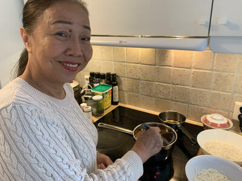
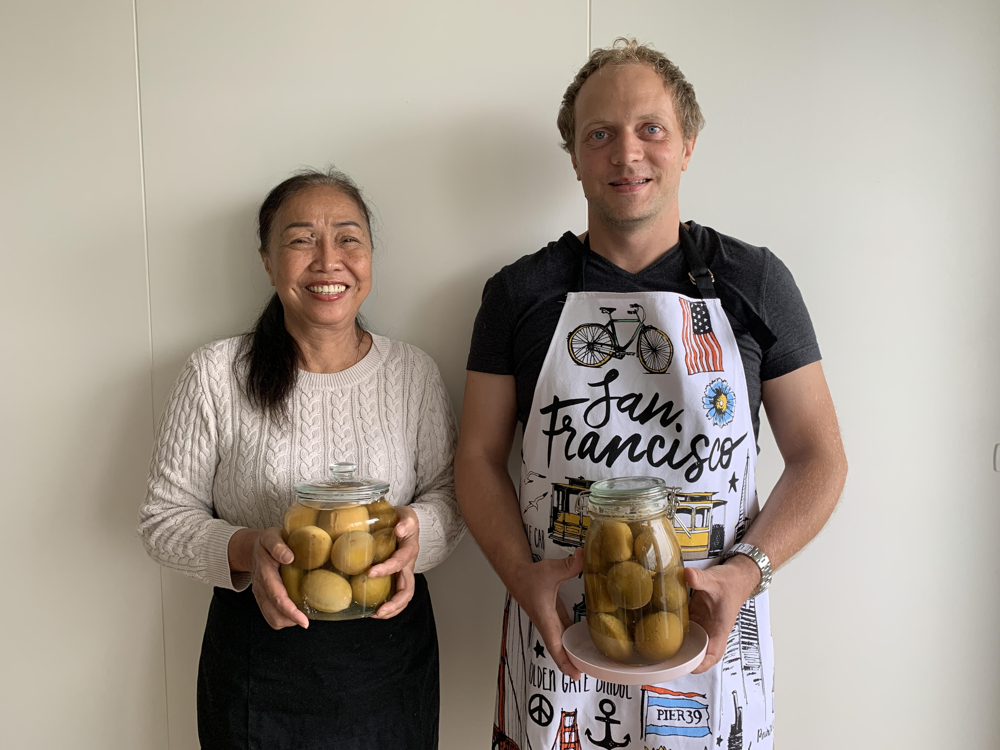
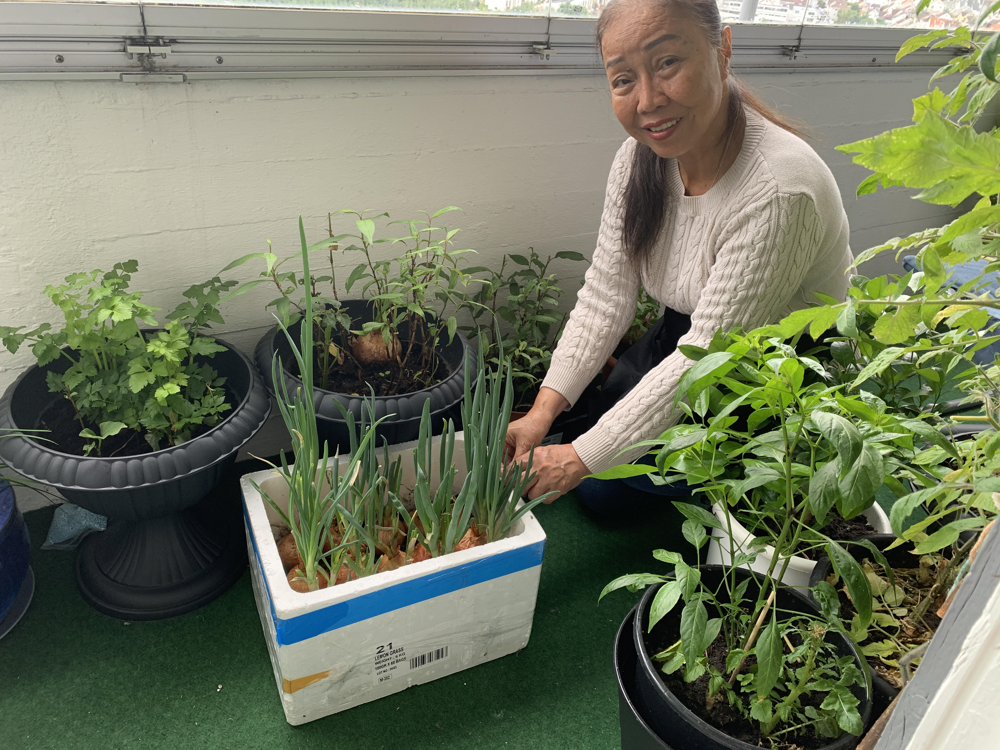

Story of monkey
Monkey was born in Cambodia where she lived peacefully for 20 years with her Vietnamese parents.
When monkey was 20 years old the Khmer rouge took power in Cambodia.
The regime of Pol Pot sent away all people in Phnom Penh to the countryside where they
were left to fend for themself. It was during this time Monkey went back to her parents home country
of Vietnam. Back in Vietnam she got a job as a chef at a restaurant in Saigon, there in the kitchen, she thrived.
She had finally found what would become her passion in life, cooking!
After working for over 40 years in restaurants all over Vietnam she knows her way around the kitchen. Nowadays she is passing all her knowledge and cooking skills to the younger generation of the family. Monkey restaurant is a result of 40 years of love and hard labor. We hope you enjoy your experience here with us.

Monkey
Although cooking for over 40 years, monkey still strive to master the art of cooking.
"One of my greates pleasures in my life is that I have never stopped learning about good cooking and good food."

Generations
Teaching younger generations about the food she learned to love.
“In the childhood memories of every good cook, there’s a large kitchen, a warm stove, a simmering pot and a mom.”

Homegrown
Homegrown vegetables and herbs are always present in our dishes.
"No Rau ram no bun bo! No basil no pho! No vegetable no dinner!"